总体说明
本文根据正点原子《STM32F429开发指南-HAL库版本》整理，介绍基于HAL库的工程模板新建与工程结构讲解。通过本章的学习，我们将掌握建立一个基于HAL库的MDK5工程的完整流程，同时对HAL库工程的关键文件、__weak修饰符、Msp回调函数以及程序执行流程有深入的理解。
在新建模板之前，需要准备如下资料：
1） HAL库开发包：STM32Cube_FW_F4_V1.11.0（ST官网下载的STM32CubeF4包完整版），光盘目录："\8，STM32参考资料\1，STM32CubeF4固件包\en.stm32cubef4.zip"。
2） MDK5.20开发环境（光盘软件目录：软件资料\软件\MDK5）。
新建基于HAL库工程模板
在新建之前，首先我们要说明一下，这一小节我们新建的工程放在光盘目录，路径为："4，程序源码\标准例程-库函数版本\实验0-1 Template工程模板-新建工程章节使用"下面，大家在学习新建工程过程中间遇到一些问题，可以直接打开这个模板，然后对比学习。
步骤1-3 新建工程与目录结构
步骤1）新建工程文件夹
在建立工程之前，我们建议用户在电脑的某个目录下面建立一个文件夹，后面所建立的工程都可以放在这个文件夹下面，这里我们建立一个文件夹为 Template。这是工程的根目录文件夹。然后为了方便我们存放工程需要的一些其他文件，这里我们还新建下面 4 个子文件夹：CORE、HALLIB、OBJ 和 USER。至于这些文件夹名字，实际上是可以任取的，我们这样取名只是为了方便识别。新建好的目录结构如下图3.3.1.1所示：
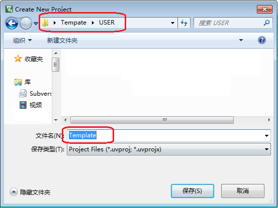
步骤2）新建MDK工程并选择芯片型号
打开MDK，点击菜单 Project → New Uvision Project，然后将目录定位到刚才建立的文件夹 Template 之下的 USER 子目录，工程取名为 Template 之后点击保存，工程文件就都保存到 USER 文件夹下面。操作过程如下图3.3.1.2和图3.3.1.3所示：
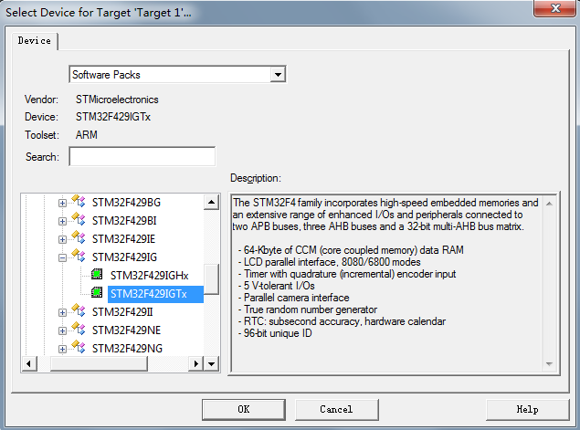
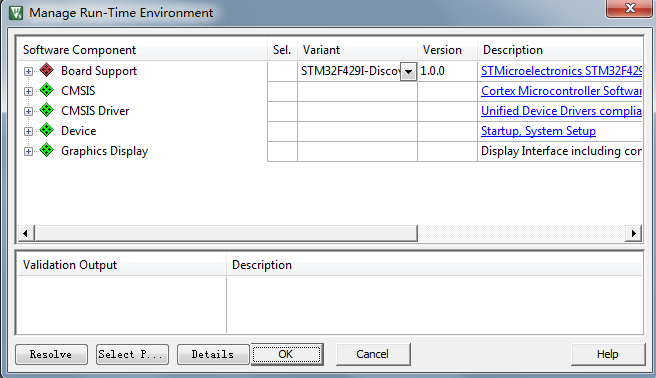
接下来会出现一个选择 Device 的界面，就是选择我们的芯片型号，这里我们定位到 STMicroelectronics 下面的 STM32F429IGT6。这里我们选择 STMicroelectronics → STM32F4 Series → STM32F429 → STM32F429IG → STM32F429IGTx（如果使用的是其他系列的芯片，选择相应的型号就可以了）。特别注意：一定要安装对应的器件 pack 才会显示这些内容。
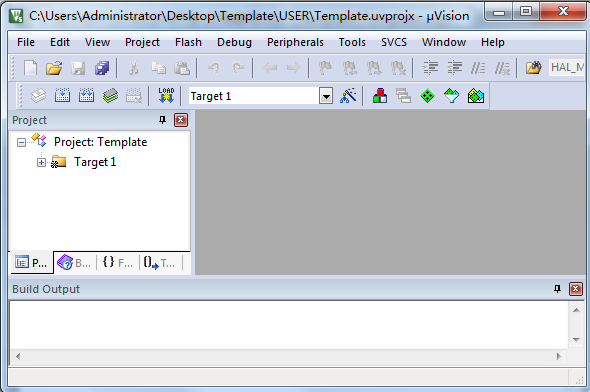
点击 OK，MDK 会弹出 Manage Run-Time Environment 对话框，如图3.3.1.5所示。这是 MDK5 新增的一个功能，在这个界面，我们可以添加自己需要的组件，从而方便构建开发环境。这里我们直接点击 Cancel 即可，得到如图3.3.1.6所示界面：
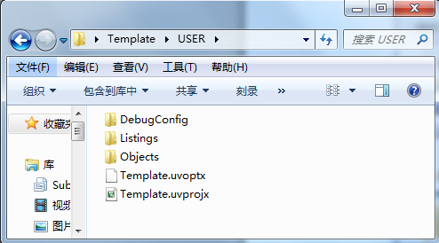
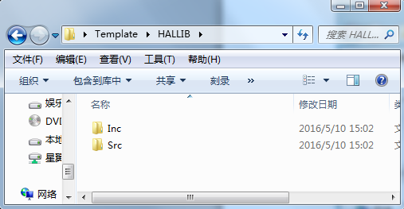
步骤3）查看USER目录文件
现在我们看看 USER 目录下面内容，如下图3.3.1.7：
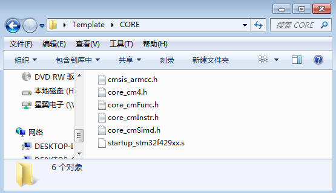
这里我们说明一下，Template.uvprojx 是工程文件，非常关键，不能轻易删除，MDK5.20 生成的工程文件是以 .uvprojx 为后缀。DebugConfig 文件夹用于存储一些调试配置文件，Listings 和 Objects 文件夹用来存储 MDK 编译过程的一些中间文件。这里，我们把 Listings 和 Objects 文件夹删除，我们会在下一步骤中新建一个 OBJ 文件夹，用来存放编译中间文件。
步骤4-7 复制库文件与系统文件
步骤4）复制HAL库源码文件到HALLIB文件夹
接下来我们将从官方 STM32CubeF4 包里面复制一些我们新建工程需要的关键文件到我们的工程目录中。首先，打开官方 STM32CubeF4 包，定位到目录 \STM32Cube_FW_F4_V1.10.0\Drivers\STM32F4xx_HAL_Driver 下面，将目录下面的 Src、Inc 文件夹复制到我们刚才建立的 HALLIB 文件夹下面。Src 存放的是固件库的 .c 文件，Inc 存放的是对应的 .h 文件。操作完成后工程 HALLIB 目录内容如下图3.3.1.8。
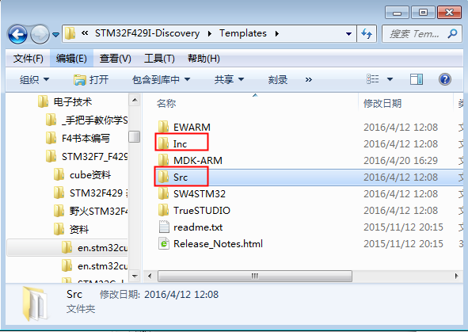
步骤5）复制启动文件和CMSIS头文件到CORE文件夹
接下来，我们要将 STM32CubeF4 包里面相关的启动文件以及一些关键头文件复制到我们的工程目录 CORE 之下。打开 STM32CubeF4 包，定位到目录 \STM32Cube_FW_F4_V1.11.0\Drivers\CMSIS\Device\ST\STM32F4xx\Source\Templates\arm 下面，将文件 startup_stm32f429xx.s 复制到 CORE 目录下面。然后定位到目录 \STM32Cube_FW_F4_V1.11.0\Drivers\CMSIS\Include，将里面的五个头文件：cmsis_armcc.h、core_cm4.h、core_cmFunc.h、core_cmInstr.h、core_cmSimd.h 同样复制到 CORE 目录下面。现在看看我们的 CORE 文件夹下面的文件，如下图3.3.1.9：
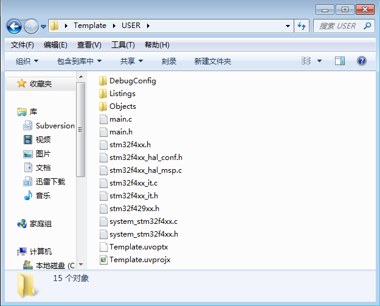
步骤6）复制模板文件到USER目录
接下来我们要复制工程模板需要的一些其他头文件和源文件到我们工程。首先定位到目录：\STM32Cube_FW_F4_V1.11.0\Drivers\CMSIS\Device\ST\STM32F4xx\Include 将里面的 3 个文件 stm32f4xx.h、system_stm32f4xx.h 和 stm32f429xx.h 复制到 USER 目录之下。这三个头文件是 STM32F4 工程非常关键的头文件。
然后进入目录 \STM32Cube_FW_F4_V1.11.0\Projects\STM32F429I-Discovery\Templates 目录下，这个目录下面有好几个文件夹，如下图3.3.1.10，我们需要从 Src 和 Inc 文件夹下面复制我们需要的文件到 USER 目录。
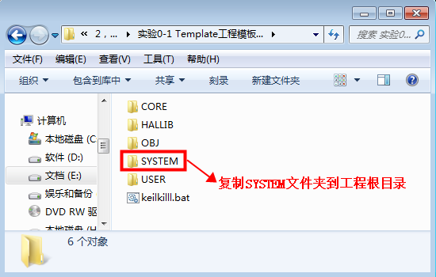
首先我们打开 Inc 目录，将目录下面的 3 个头文件 stm32f4xx_it.h、stm32f4xx_hal_conf.h 和 main.h 全部复制到 USER 目录下面。然后我们打开 Src 目录，将下面的四个源文件 system_stm32f4xx.c、stm32f4xx_it.c、stm32f4xx_hal_msp.c 和 main.c 同样全部复制到 USER 目录下面。相关文件复制到 USER 目录之后 USER 目录文件如下图3.3.1.11：
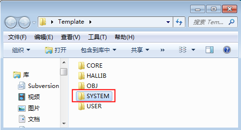
步骤7）复制SYSTEM文件夹到工程根目录
前面6个步骤，我们将需要的文件复制到了我们的工程目录下面了。接下来，我们还需要复制 ALIENTEK 编写的 SYSTEM 文件夹内容到工程目录中。SYSTEM 文件夹内容是 ALIENTEK 为开发板用户编写的一套非常实用的函数库，比如系统时钟初始化、串口打印、延时函数等。
这里我们打开光盘的 "4，程序源码\标准例程-库函数版本\实验0-1 Template工程模板-新建工程章节使用"工程目录，从里面复制 SYSTEM 文件夹到我们的 Template 工程模板根目录即可。操作过程如下图3.3.1.12和图3.3.1.13所示：
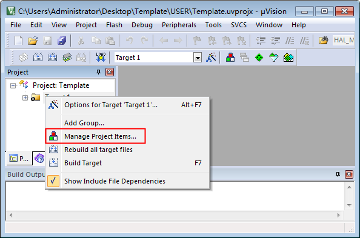
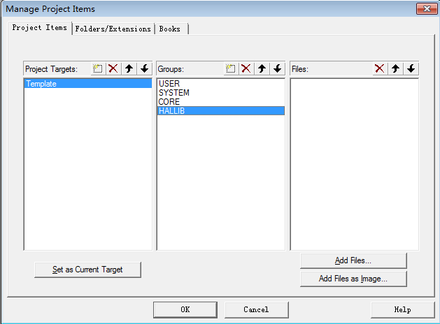
步骤8-11 管理工程文件与分组
步骤8）在MDK中管理工程文件
到这里，工程模板所需要的所有文件都已经复制进去。接下来，我们将在 MDK 中将这些文件添加到工程。右键点击 Target1，选择 Manage Project Items，如下图3.3.1.14所示：
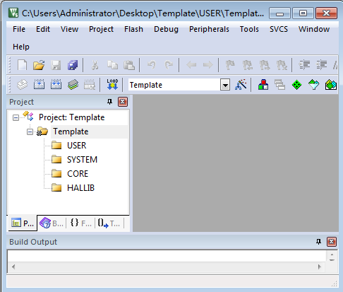
步骤9）修改Target名称并新建Groups
Project Targets 一栏，我们将 Target 名字修改为 Template，然后在 Groups 一栏删掉一个 Source Group1，建立四个 Groups：USER、SYSTEM、CORE 和 HALLIB。然后点击 OK，可以看到我们的 Target 名字以及 Groups 情况如下图3.3.1.15和图3.3.1.16所示：
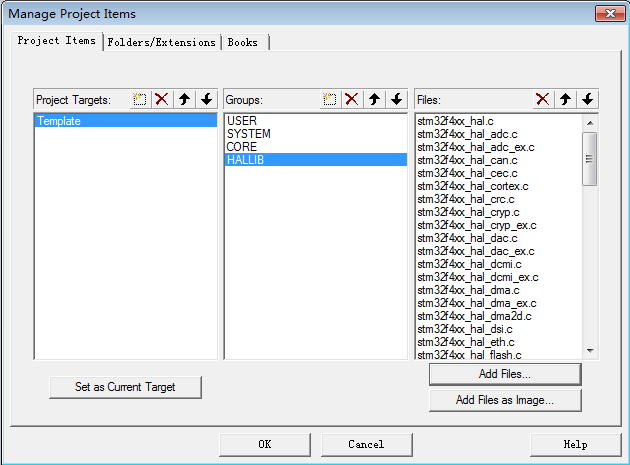
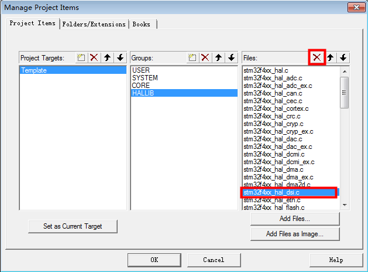
步骤10）添加文件到HALLIB分组
下面我们往 Group 里面添加我们需要的文件。我们按照步骤9的方法，右键点击 Template，选择 Manage Project Items。然后选择需要添加文件的 Group，这里第一步我们选择 HALLIB，然后点击右边的 Add Files，定位到我们刚才建立的目录 \HALLIB\Src 下面，将里面所有的文件选中（Ctrl+A），然后点击 Add，然后 Close。可以看到 Files 列表下面包含我们添加的文件，如下图3.3.1.17。
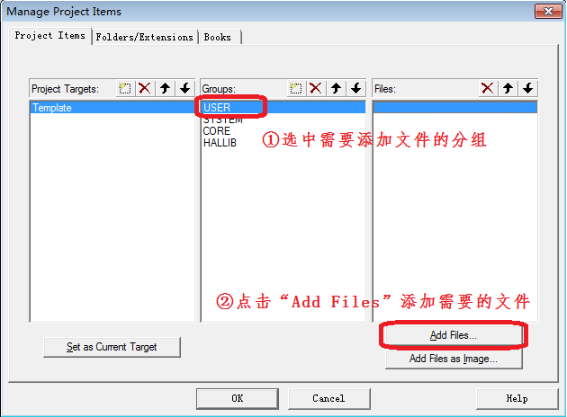
这里有几个文件比较特殊，例如 stm32f4xx_hal_dsc.c、stm32f4xx_hal_iptim.c 和 stm32f4xx_hal_msp_template.c 三个文件不需要引入工程。stm32f4xx_hal_dsc.c 是 MIPI 接口相关函数，STM32F429 没有这个接口；stm32f4xx_hal_iptim.c 是低功耗定时器相关函数，STM32F429 也没有这个功能；stm32f4xx_hal_msp_template.c 文件内容是一些空函数，一般也不需要引入。删除某个方法如下图3.3.1.18所示：
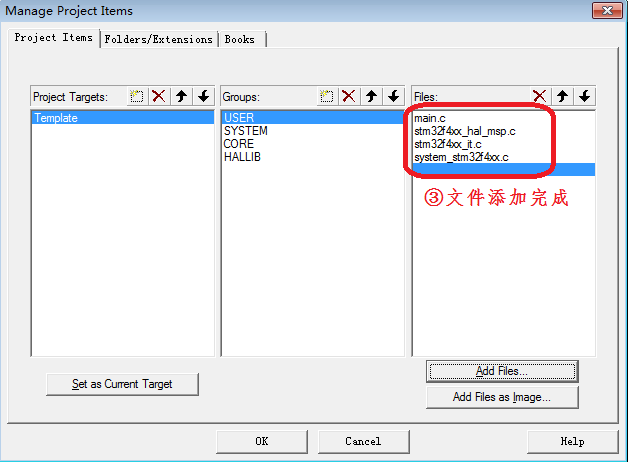
步骤11）添加文件到CORE、USER和SYSTEM分组
用上面同样的方法，将 Groups 定位到 CORE、USER 和 SYSTEM 分组之下，添加需要的文件。CORE 分组下面需要添加的文件为一些头文件以及启动文件 startup_stm32f429xx.s（注意，默认添加的时候文件类型为 .c，添加 .h 头文件和 startup_stm32f429xx.s 启动文件的时候，你需要选择文件类型为 All files 才能看得到这些文件）。
USER 分组下面需要添加的文件 USER 目录下面所有的 .c 文件：main.c、stm32f4xx_hal_msp.c、stm32f4xx_it.c 和 system_stm32f4xx.c 四个文件。SYSTEM 分组下面需要添加 SYSTEM 文件夹下所有子文件夹内的 .c 文件，包括 sys.c、usart.c 和 delay.c 三个源文件。添加完必要的文件到工程之后，最后点击 OK，回到工程主界面。操作过程如下图3.3.1.19~3.3.1.22：
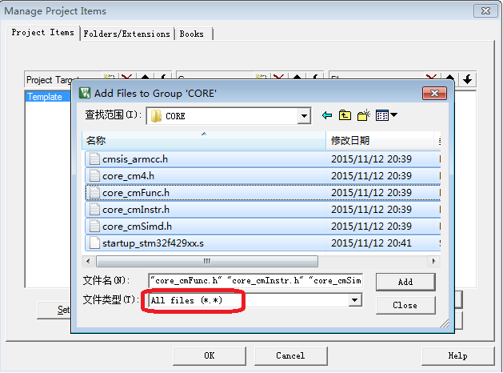
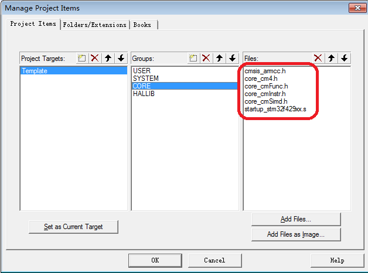
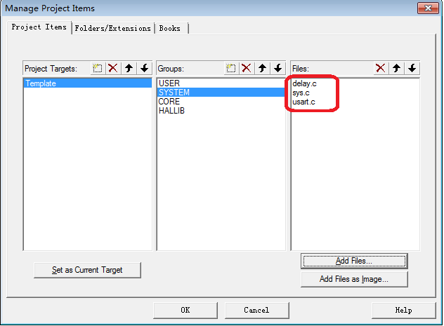
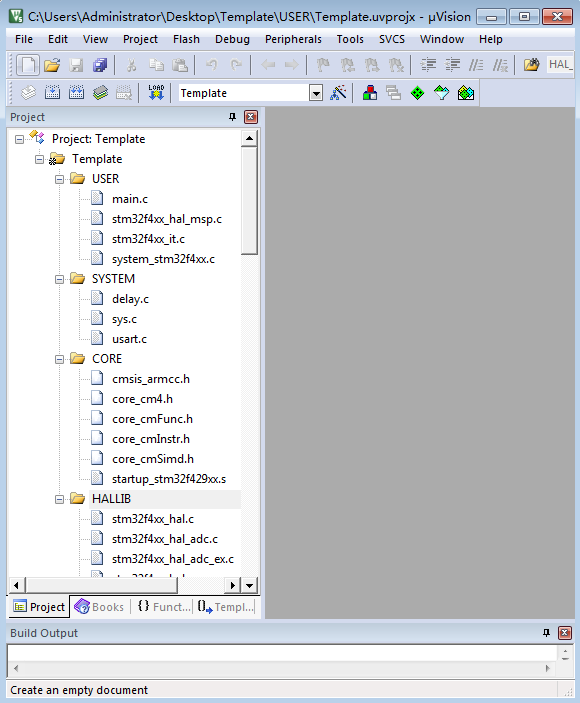
最后添加文件到 SYSTEM 分组，这里需要注意，SYSTEM 文件夹包含三个子文件夹 sys、delay 和 usart。在添加文件的时候，需要分别定位到三个子文件夹内部，依次添加下面的 .c 文件即可。添加完成后如下图3.3.1.23所示：
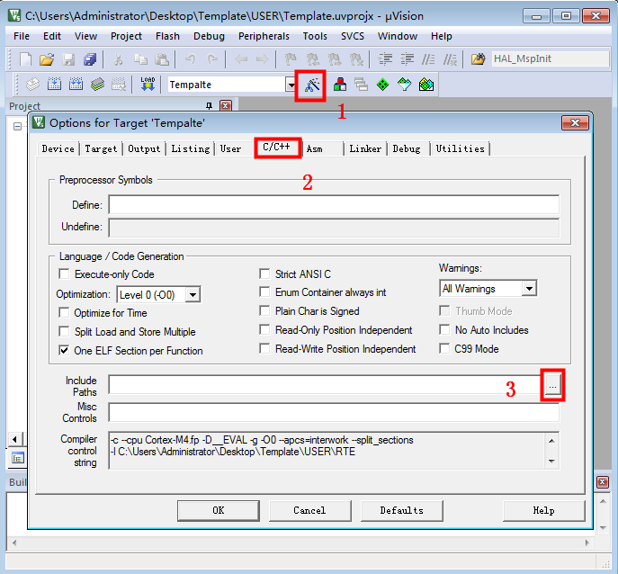
添加完所有文件到工程中之后，我们点击 OK 按钮，回到 MDK 工程主界面，如下图3.3.1.24所示：
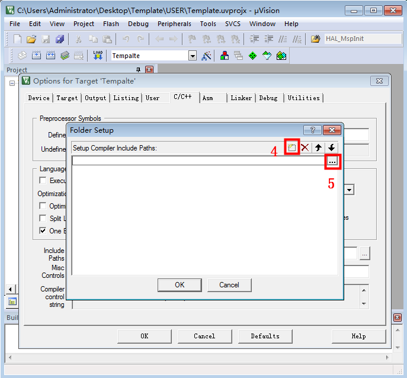
步骤12-14 编译选项与路径设置
步骤12）设置头文件包含路径
接下来我们要在 MDK 里面设置头文件存放路径。也就是告诉 MDK 到哪些目录下面去寻找包含了的头文件。这一步骤非常重要。如果没有设置头文件路径，那么工程会出现报错头文件路径找不到。具体操作如下图3.3.1.25和3.3.1.26所示，5步之后添加相应的头文件路径。
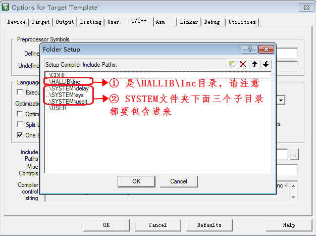
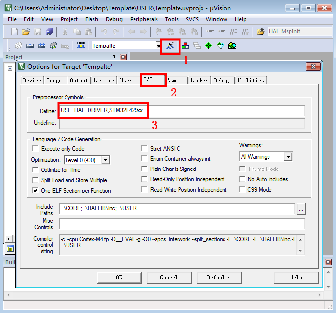
这里大家需要注意，这里添加的路径必须添加到头文件所在目录的最后一级。比如在 SYSTEM 文件夹下面有三个子文件夹下面都有 .h 头文件，这些头文件在工程中都需要使用到，所以我们必须将这三个子目录都包含进来。这里我们需要添加的头文件路径包括：\CORE、\USER、\SYSTEM\delay、\SYSTEM\usart、SYSTEM\sys 以及 \HALLIB\Inc。这里还需要提醒大家，HAL 库存放头文件子目录是 \HALLIB\Inc，不是 HALLIB\Src。添加完成之后如下图3.3.1.27所示。
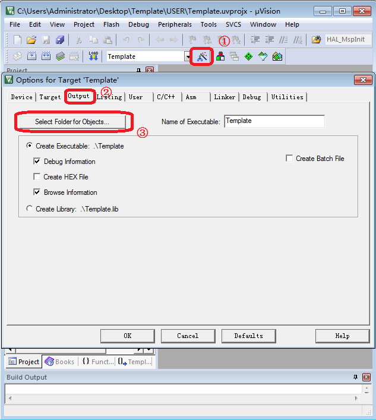
步骤13）添加全局宏定义标识符
接下来对于 STM32F429 系列的工程，还需要添加全局宏定义标识符，所谓全局宏定义标识符，就是在工程中任何地方都可见。添加方法是点击魔术棒之后，进入 C/C++ 选项卡，然后在 Define 输入框连输入：USE_HAL_DRIVER,STM32F429xx。注意这里是两个标识符 USE_HAL_DRIVER 和 STM32F429xx，他们之间是用逗号隔开的。
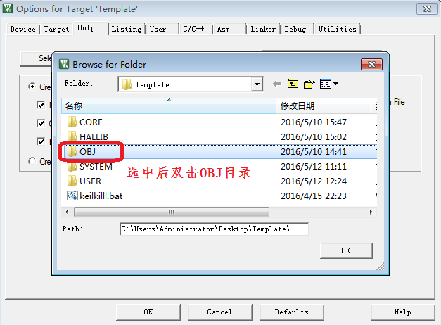
步骤14）设置编译输出目录
接下来我们要编译工程，在编译之前我们首先要选择编译中间文件编译后存放目录。前面我们讲过，MDK 默认编译后的中间文件存放目录为 USER 目录下面的 Listings 和 Objects 子目录，这里为了和我们 ALIENTEK 工程结构保持一致，我们重新选择存放到目录 OBJ 目录之下。操作方法是点击魔术棒，然后选择 "Output" 选项下面的 "Select folder for objects..."，然后选择目录为我们上面新建的 OBJ 目录，然后依次点击 OK 即可。操作过程如下图3.3.1.29和3.3.1.30所示：
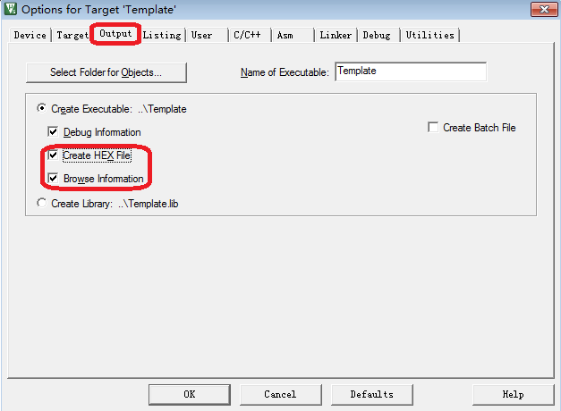
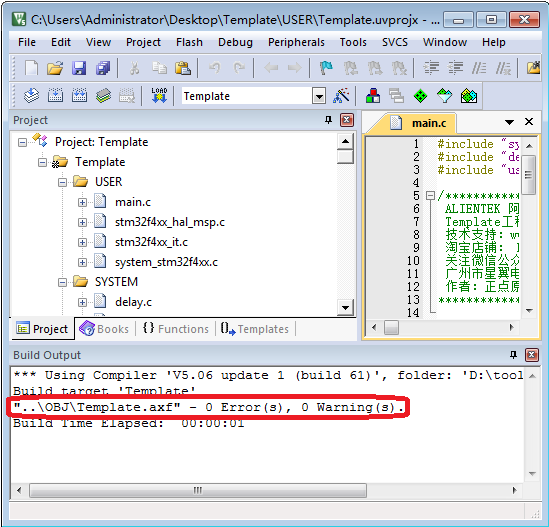
选择完 OBJ 目录为编译中间文件存放目录之后，点击 OK 回到 Output 选项卡。这里我们还要勾上 "Create HEX File" 选项和 Browse Information 选项。Create HEX File 选项选上是要求编译之后生成 HEX 文件。而 Browse Information 选项选上是方便我们查看工程中的一些函数变量定义等。
步骤15-17 代码编写与编译验证
步骤15）替换main.c文件内容
接下来在编译之前，我们先把 main.c 文件里面的内容替换为如下内容：
void Delay(__IO uint32_t nCount);
void Delay(__IO uint32_t nCount)
{
while(nCount--){}
}
int main(void)
{
GPIO_InitTypeDef GPIO_Initure;
HAL_Init(); //初始化HAL库
Stm32_Clock_Init(360,25,2,8); //设置时钟,180Mhz
__HAL_RCC_GPIOB_CLK_ENABLE(); //开启GPIOB时钟
GPIO_Initure.Pin=GPIO_PIN_0|GPIO_PIN_1; //PB1,0
GPIO_Initure.Mode=GPIO_MODE_OUTPUT_PP; //推挽输出
GPIO_Initure.Pull=GPIO_PULLUP; //上拉
GPIO_Initure.Speed=GPIO_SPEED_HIGH; //高速
HAL_GPIO_Init(GPIOB,&GPIO_Initure);
while(1)
{
HAL_GPIO_WritePin(GPIOB,GPIO_PIN_0,GPIO_PIN_SET); //PB1置1
HAL_GPIO_WritePin(GPIOB,GPIO_PIN_1,GPIO_PIN_SET); //PB0置1
Delay(0x7FFFFF);
HAL_GPIO_WritePin(GPIOB,GPIO_PIN_0,GPIO_PIN_RESET); //PB1置0
HAL_GPIO_WritePin(GPIOB,GPIO_PIN_1,GPIO_PIN_RESET); //PB0置0
Delay(0x7FFFFF);
}
}上面这段代码，大家如果不方便自己编写，可以直接打开我们光盘库函数源码目录找到已经新建好的工程模板 USER 目录下面的 main.c 文件，直接复制过来即可。
步骤16）编译工程
下面我们点击编译按钮编译工程，可以看到工程编译通过没有任何错误和警告。这里大家可能会遇到编译之后会有一个警告，警告的内容是："warning: #1-D: last line of file ends without a newline"。我们只需要在 main.c 函数结尾加一个回车即可解决，这个是 MDK 自身的 BUG。
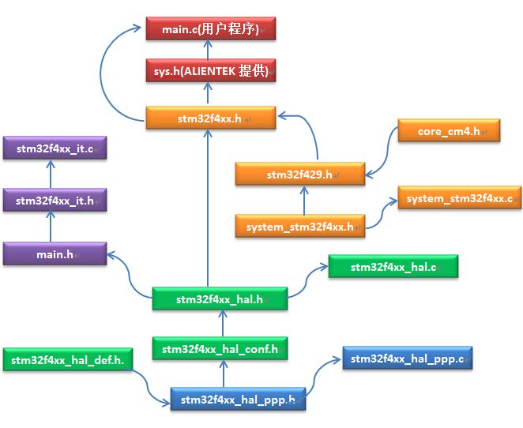
步骤17）修改中断优先级分组
到这里，一个基于 HAL 库的工程模板就建立完成，同时在工程的 OBJ 目录下面生成了对应的 hex 文件。大家可以参考后面我们 3.4 小节的内容，将 hex 文件下载到开发板，会发现两个 LED 灯不停的闪烁现象。
这里还有一个地方需要大家修改一下，那就是关于系统初始化之后的中断优先级分组组号的设置。默认情况下调用 HAL 初始化函数 HAL_Init 之后，会设置分组为组 4，这里我们正点原子所有实验使用的是分组 2，所以我们修改 HAL_Init 函数内部，重新设置分组为组 2 即可。具体方法是：打开 HALLIB 分组之下的 stm32f4xx_hal.c 文件，搜索函数 HAL_Init，找到函数体，里面默认有这样一行代码：
HAL_NVIC_SetPriorityGrouping(NVIC_PRIORITYGROUP_4);我们将入口参数 NVIC_PRIORITYGROUP_4 修改为 NVIC_PRIORITYGROUP_2 即可。关于中断优先级分组相关知识请参考本手册 4.5 小节即可。
工程模板解读
上一节，我们新建了一个基于 HAL 库的 STM32F429 工程模板，本节，我们将给大家讲解工程模板中的一些关键文件的作用以及整个工程模板程序运行流程。通过对本节内容的学习，大家将对 STM32F429 工程有一个比较全面的了解，为后面实验学习打下良好的基础。
关键文件介绍
在讲解之前我们需要说明一点，任何一个 MDK 工程，不管它有多复杂，无非就是一些 .c 源文件和 .h 头文件，还有一些类似 .s 的启动文件或者 lib 文件等。在工程中，他们通过各种包含关系组织在一起，被我们用户代码最终调用或者引用。所以我们必须了解这些文件的作用以及他们之间的包含关系，从而理解这个工程的运行流程。
1） HAL 库关键文件介绍如下表3.3.2.1所示：
| 文件 | 描述 |
|---|---|
| stm32f4xx_hal_ppp.c/.h | 基本外设的操作 API，ppp 代表任意外设。其中 stm32f4xx_hal_cortex.c/.h 比较特殊，它是一些 Cortex 内核通用函数声明和定义，例如中断优先级 NVIC 配置，系统软复位以及 Systick 配置等。 |
| stm32f4xx_hal_ppp_ex.c/.h | 拓展外设特性的 API。 |
| stm32f4xx_hal.c | 包含 HAL 通用 API（比如 HAL_Init、HAL_DeInit、HAL_Delay 等）。 |
| stm32f4xx_hal.h | HAL 的头文件，它应被客户代码所包含。 |
| stm32f4xx_hal_conf.h | HAL 的配置文件，主要用来选择使能何种外设以及一些时钟相关参数设置。其本身应该被客户代码所包含。 |
| stm32f4xx_hal_def.h | 包含 HAL 的通用数据类型定义和宏定义 |
| stm32f4xx_ll_ppp.c/.h | 在一些复杂外设中实现底层功能，它们在 stm32f4xx_hal_ppp.c 中被调用 |
2） stm32f4xx_it.c/stm32f4xx_it.h 文件
这两个文件非常简单，也非常好理解。stm32f4xx_it.h 中主要是一些中断服务函数的申明。stm32f4xx_it.c 中是这些中断服务函数定义，而这些函数定义除了 Systick 中断服务函数 SysTick_Handler 外基本都是空函数，没有任何控制逻辑。一般情况下，我们可以去掉这两个文件，然后把中断服务函数写在工程中的任何一个可见文件中。
3） stm32f4xx.h 头文件
头文件 stm32f4xx.h 内容看似非常少，却非常重要，它是所有 stm32f4 系列的顶层头文件。使用 STM32F4 任何型号的芯片，都需要包含这个头文件。同时，因为 stm32f4 系列芯片型号非常多，ST 为每种芯片型号定义了一个特有的片上外设访问层头文件，比如 STM32F429 系列，ST 定义了一个头文件 stm32f429xx.h，然后 stm32f4xx.h 顶层头文件会根据工程芯片型号，来选择包含对应芯片的片上外设访问层头文件。我们可以打开 stm32f4xx.h 头文件可以看到，里面有如下几行代码：
#if defined(STM32F405xx)
#include "stm32f405xx.h"
...
#elif defined(STM32F429xx)
#include "stm32f429xx.h"
...
#else
#error "Please select first the target STM32F4xx device used in your application"
#endif这几行代码非常好理解，我们以 STM32F429 为例，如果定义了宏定义标识符 STM32F429xx，那么头文件 stm32f4xx.h 将会包含头文件 stm32f429xx.h。实际上，在我们上一节新建工程的时候，我们在 C/C++ 选项卡里面输入的全局宏定义标识符中就包含了标识符 STM32F429xx（请参考图3.3.1.28）。所以头文件 stm32f429xx.h 一定会被整个工程所引用。
4） stm32f429xx.h 头文件
根据前面的讲解，stm32f429xx.h 是 stm32f429 系列芯片通用的片上外设访问层头文件，只要我们进行 STM32F429 开发，就必然要使用到该文件。打开该文件我们可以看到里面主要都是一些结构体和宏定义标识符。这个文件的主要作用是寄存器定义声明以及封装内存操作。
5） system_stm32f4xx.c/system_stm32f4xx.h 文件
头文件 system_stm32f4xx.h 和源文件 system_stm32f4xx.c 主要是声明和定义了系统初始化函数 SystemInit 以及系统时钟更新函数 SystemCoreClockUpdate。SystemInit 函数的作用是进行时钟系统的一些初始化操作以及中断向量表偏移地址设置，但它并没有设置具体的时钟值，这是与标准库的最大区别。SystemCoreClockUpdate 函数是在系统时钟配置进行修改后，调用这个函数来更新全局变量 SystemCoreClock 的值。
6） stm32f4xx_hal_msp.c 文件
MSP，全称为 MCU support package。函数名字中带有 MspInit 的函数，它们的作用是进行 MCU 级别硬件初始化设置，并且它们通常会被上一层的初始化函数所调用，这样做的目的是为了把 MCU 相关的硬件初始化剥离出来，方便用户代码在不同型号的 MCU 上移植。stm32f4xx_hal_msp.c 文件定义了两个函数 HAL_MspInit 和 HAL_MspDeInit。这两个函数分别被文件 stm32f4xx_hal.c 中的 HAL_Init 和 HAL_DeInit 所调用。HAL_MspInit 函数的主要作用是进行 MCU 相关的硬件初始化操作。
7） startup_stm32f429xx.s 启动文件
STM32 系列所有芯片工程都会有一个 .s 启动文件。我们的开发板是 STM32F429 系列，所以我们需要使用与之对应的启动文件 startup_stm32f429xx.s。启动文件的作用主要是进行堆栈的初始化，中断向量表以及中断函数定义等。启动文件有一个很重要的作用就是系统复位后引导进入 main 函数。打开启动文件 startup_stm32f429xx.s，可以看到下面几行代码：
; Reset handler
Reset_Handler PROC
EXPORT Reset_Handler [WEAK]
IMPORT SystemInit
IMPORT __main
LDR R0, =SystemInit
BLX R0
LDR R0, =__main
BX R0
ENDPReset_Handler 在我们系统启动的时候会执行，这几行代码的作用是在系统启动之后，首先调用 SystemInit 函数进行系统初始化，然后引导进入 main 函数执行用户代码。
接下来我们看看 HAL 库工程模板中各个文件之间的包含关系。从上面工程文件包含关系图可以看出，顶层头文件 stm32f4xx.h 直接或间接包含了其他所有工程必要头文件，所以在我们的用户代码中，我们只需要包含顶层头文件 stm32f4xx.h 即可。这里我们还需要说明一下，在我们 ALIENTEK 提供的 SYSTEM 文件夹内部的 sys.h 头文件中，我们默认包含了 stm32f4xx.h 头文件，所以在我们用户代码中，只需要包含 sys.h 头文件即可，当然也可以直接包含顶层头文件 stm32f4xx.h。
HAL库中__weak修饰符讲解
在 HAL 库中，很多回调函数前面使用 __weak 修饰符，这里我们有必要给大家讲解 __weak 修饰符的作用。
weak 顾名思义是"弱"的意思，所以如果函数名称前面加上 __weak 修饰符，我们一般称这个函数为"弱函数"。加上了 __weak 修饰符的函数，用户可以在用户文件中重新定义一个同名函数，最终编译器编译的时候，会选择用户定义的函数，如果用户没有重新定义这个函数，那么编译器就会执行 __weak 声明的函数，并且编译器不会报错。
这里我给大家举个例子来加深大家的理解。比如我们打开工程模板，找到并打开文件 stm32f4xx_hal.c 文件，里面定义了一个函数 HAL_MspInit，定义如下：
__weak void HAL_MspInit(void)
{
__IO uint32_t tmpreg = 0x00;
UNUSED(tmpreg);
}大家可以看出，HAL_MspInit 函数前面有加修饰符 __weak。同时，在该文件的前面有定义函数 HAL_Init，并且 HAL_Init 函数中调用了函数 HAL_MspInit。
HAL_StatusTypeDef HAL_Init(void)
{
...//此处省略部分代码
HAL_MspInit();
return HAL_OK;
}如果我们没有在工程中其他地方重新定义 HAL_MspInit() 函数，那么 HAL_Init 初始化函数执行的时候，会默认执行 stm32f4xx_hal.c 文件中定义的 HAL_MspInit 函数，而这个函数没有任何控制逻辑。如果用户在工程中重新定义函数 HAL_MspInit，那么调用 HAL_Init 之后，会执行用户自己定义的 HAL_MspInit 函数而不会执行 stm32f4xx_hal.c 默认定义的函数。也就是说，表面上我们看到函数 HAL_MspInit 被定义了两次，但是因为有一次定义是弱函数，使用了 __weak 修饰符，所以编译器不会报错。
__weak 在回调函数的时候经常用到。这样的好处是，系统默认定义了一个空的回调函数，保证编译器不会报错。同时，如果用户自己要定义用户回调函数，那么只需要重新定义即可，不需要考虑函数重复定义的问题，使用非常方便，在 HAL 库中 __weak 关键字被广泛使用。
Msp回调函数执行过程解读
大家先打开我们前面新建的工程模板，搜索 MspInit 字符串可以发现，在我们的工程模板文件中，有 70 多个文件定义或者调用了函数名字中包含 MspInit 字符串的函数，而且函数名字基本遵循 HAL_PPP_MspInit 格式（PPP 代表任意外设）。那么这些函数是怎么被程序调用，又是什么作用呢？下面我们以串口为例进行讲解。
大家打开我们的工程模板 SYSTEM 分组下面的 usart.c 文件可以看到，内部我们定义了两个函数 uart_init 和 HAL_UART_MspInit。我们先来大致看看这两个函数的定义：
void uart_init(u32 bound)
{
UART1_Handler.Instance=USART1; //USART1
UART1_Handler.Init.BaudRate=bound; //波特率
...//此处省略部分串口1参数设置代码
UART1_Handler.Init.Mode=UART_MODE_TX_RX; //收发模式
HAL_UART_Init(&UART1_Handler); //HAL_UART_Init()会使能UART1
}
//UART底层初始化，时钟使能，引脚配置，中断配置
void HAL_UART_MspInit(UART_HandleTypeDef *huart)
{
...//此处省略部分代码
GPIO_Initure.Pin=GPIO_PIN_9; //PA9
GPIO_Initure.Mode=GPIO_MODE_AF_PP; //复用推挽输出
HAL_GPIO_Init(GPIOA,&GPIO_Initure); //初始化PA9
GPIO_Initure.Pin=GPIO_PIN_10; //PA10
HAL_GPIO_Init(GPIOA,&GPIO_Initure); //初始化PA10
...//此处省略部分代码
}用户函数 uart_init 主要作用是设置串口 1 相关参数，包括波特率，停止位，奇偶校验位等，并且最终是通过调用 HAL_UART_Init 函数进行参数设置。而函数 HAL_UART_MspInit 则主要进行串口 GPIO 引脚初始化设置。接下来我们打开 usart_init 函数内部调用的 UART 初始化函数 HAL_UART_Init 可以看到代码如下：
HAL_StatusTypeDef HAL_UART_Init(UART_HandleTypeDef *huart)
{
...//此处省略部分代码
if(huart->State == HAL_UART_STATE_RESET)//如果串口没有进行过初始化
{
huart->Lock = HAL_UNLOCKED;
HAL_UART_MspInit(huart);
}
...//此处省略部分代码
return HAL_OK;
}在函数 HAL_UART_Init 内部，通过判断逻辑判断如果串口还没有进行初始化，那么会调用函数 HAL_UART_MspInit 进行相关初始化设置。同时，我们可以看到，在文件 stm32f4xx_hal_uart.c 内部，有定义一个弱函数 HAL_UART_MspInit，内容如下：
__weak void HAL_UART_MspInit(UART_HandleTypeDef *huart)
{
UNUSED(huart);
}这里定义的弱函数 HAL_UART_MspInit 是一个空函数，没有任何实际的控制逻辑。根据前面的讲解可知，__weak 修饰符定义的弱函数如果用户自己重新定义了这个函数，那么会优先执行用户定义函数。所以，实际上在函数 HAL_UART_Init 内部调用的 HAL_UART_MspInit() 函数，最终执行的是用户在 usart.c 中自定义的 HAL_UART_MspInit() 函数。
那么整个串口初始化的过程为：用户函数 uart_init → HAL_UART_Init → HAL_UART_MspInit。学到这里有同学会问，为什么串口相关初始化不在 HAL_UART_Init 函数内部一次初始化而还要调用函数 HAL_UART_MspInit() 呢？这实际就是 HAL 库的一个优点，它通过开放一个回调函数 HAL_UART_MspInit()，让用户自己去编写与串口相关的 MCU 级别的硬件初始化，而与 MCU 无关的串口参数相关的通用配置则放在 HAL_UART_Init。
我们要初始化一个串口，首先要设置和 MCU 无关的东西，例如波特率，奇偶校验，停止位等，这些参数设置和 MCU 没有任何关系，可以使用 STM32F1，也可以是 STM32F2/F3/F4/F7 上的串口。而一个串口设备它需要一个 MCU 来承载，例如用 STM32F4 来做承载，PA9 做为发送，PA10 做为接收，MSP 就是要初始化 STM32F4 的 PA9、PA10，配置这两个引脚。所以 HAL 驱动方式的初始化流程就是：HAL_USART_Init() → HAL_USART_MspInit()，先初始化与 MCU 无关的串口协议，再初始化与 MCU 相关的串口引脚。在 STM32 的 HAL 驱动中 HAL_PPP_MspInit() 作为回调，被 HAL_PPP_Init() 函数所调用。当我们需要移植程序到 STM32F1 平台的时候，我们只需要修改 HAL_PPP_MspInit 函数内容而不需要修改 HAL_PPP_Init 入口参数内容。
在 STM32 的 HAL 库中，大部分外设都有回调函数 HAL_MspInit，通过对本小节学习，大家对这些回调函数的作用和调用过程会非常熟悉，这里我们就不做一一列举。
程序执行流程图
经过前面的讲解，大家对工程模板以及关键文件有了比较详细的了解。接下来我们看看程序执行流程如下图3.3.2.4.1所示：
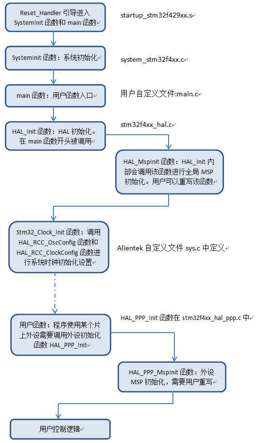
从该流程图可以非常清晰的理解整个程序执行流程，这里我们略微讲解一下。启动文件 startup_stm32f429xx.s 中 Reset_Handler 部分会引导先执行 SystemInit 函数，然后再进入 main 函数。在 main 函数内部，一般情况下，我们会把 HAL 初始化函数 HAL_Init 放在最开头部分，然后再进行时钟初始化设置。这些设置完成之后，接下来便是调用外设初始化函数 HAL_PPP_Init 进行外设参数初始化设置，同时重写回调函数 HAL_PPP_MspInit 进行外设 MCU 相关的参数设置。